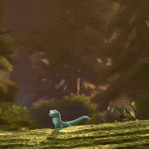

Content that a cursor hauls in from the left.
And another one, from the right.
Slower, from the bottom.

Two things, one keypress.
Kari drops this a bit short, and John nudges it into place.
Hailey types this out, then leaves.
John is a faster typist.
The lizard sits on a rock. A second lizard joins the first lizard, and a third lizard watches. Every lizard here is a lizard, which is what makes the lizard count so high: lizard, lizard, lizard.
The plot shows a strong correlation between the two variables.
Fussed over, twice.
Pasted straight in.
Someone else’s work.
The slide feels inhabited.
forty observations
Moved, then unmoved.
No byline needed.
Contested.
Contested by nobody in particular.
Pros
Cons
A claim worth questioning.